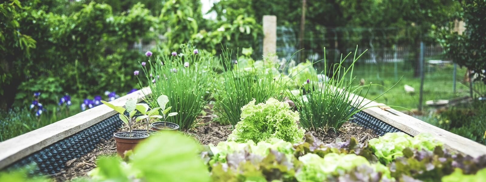

Plant on Northwest time.
The Cascades draw a rain line through Oregon and Washington, and which side you're on decides when you plant. Enter your ZIP or pick a city for local frost dates, what to plant this week, and a full-year planting calendar.
Plan your garden
Pick your plants, or start from a ready-made plan like a salad bed or a salsa garden, and get a dated to-do list for the year. It warns you when a plant isn't in season, saves as you go and prints on one page.
Browse by plant type
All 81 plants


New to gardening?
Start with five forgiving crops that are hard to kill, then read the beginner's guide.
Guides for Northwest gardeners
All articles What Your Last Frost Date Really MeansA last frost date isn't a promise. Here's what the number on a planting chart actually measures, and how to use it without losing your tomatoes.
What Your Last Frost Date Really MeansA last frost date isn't a promise. Here's what the number on a planting chart actually measures, and how to use it without losing your tomatoes. How to Harden Off Seedlings Before Planting OutSeedlings raised indoors need a week or two to adjust to sun, wind and cool nights. Here's a simple day-by-day schedule that works in a Northwest spring.
How to Harden Off Seedlings Before Planting OutSeedlings raised indoors need a week or two to adjust to sun, wind and cool nights. Here's a simple day-by-day schedule that works in a Northwest spring. Soil pH in the Northwest: Testing, Lime and When to Leave It AloneHeavy rain makes many west-side soils acidic, while east-side soils lean the other way. Here's how to find out what you have and what to do about it.
Soil pH in the Northwest: Testing, Lime and When to Leave It AloneHeavy rain makes many west-side soils acidic, while east-side soils lean the other way. Here's how to find out what you have and what to do about it.
Why Northwest planting dates are different
National charts key everything off the last frost date. Here that's only half the story: Portland's typical last frost is in mid-March, yet tomatoes planted then sit in cold, wet soil for two months, while the high desert can frost into June. Rainline Garden combines NOAA frost records for each area with regional timing for when the soil is actually ready. See how the dates are worked out.